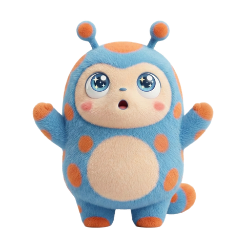

夕方に着いて、商店街で食べ歩き。気づいたらもう花火の時間。
とおまち観光協会 presents
気合いを入れすぎなくていい、ふらっと寄れる夏の特別。
3,000発の花火｜8月最終土曜 開催
「本当はただ、誰かと夏の夜をゆっくり楽しみたいだけなのに」
川が近すぎて、顔に風が届く迫力。それでいて、ゆったり過ごせる規模感。
夕方に着いて、商店街で食べ歩き。気づいたらもう花火の時間。
顔に風が届くくらいの迫力。それでもすぐ電車に乗れる。
急いで帰らなくていい。小さくて可愛いお宿で、明日もゆっくり。
8月最終土曜／とおまち川河川敷／入場無料
小雨決行・荒天時は翌日延期の可能性あり
有料観覧席 ¥1,500（税込）
先着の事前予約制。ゆったり座って見たい人におすすめ。前日17時までキャンセル無料。
前日17時まで無料キャンセルOK・入力1分
夕方
到着して、商店街で食べ歩き

夜
顔に風が届く花火に感動
その夜
急いで帰らず、小さな宿でゆっくり
翌日
帰る前に、もうひとまわり町歩き
MAP — とおまち町内
Googleマップで開く ↗宿泊 — LINEで空室・プラン相談
和風旅館タイプ
町の歴史を感じる、落ち着いた雰囲気。1泊2食付き ¥9,000台〜
民宿・ゲストハウス
家族経営の、あたたかみあるリーズナブルな一軒。
小規模ホテル
駅・会場からアクセス良好。シンプルで快適。
飲食店 — 商店街エリアより6軒
相談だけでも大歓迎・LINEで1分
「思ったよりゆったり見られて、ふらっと来てよかったです」
27歳女性・隣県在住
「商店街の出店を見ながら歩くだけでも十分楽しめました」
30代男性・カップル来場
「駅からすぐで、思っていたより気軽に行けました」
33歳女性・友人グループ
「派手さよりゆったりした雰囲気が良く、また来ようと思いました」
40代女性・家族来場
日帰り観覧は不要です。ゆったり座りたい場合は有料観覧席の予約がおすすめです。
最寄駅から徒歩約10分。当日は周辺道路が混雑するため、車での来場は非推奨です。
小雨決行。荒天時は翌日に延期する可能性があります。最新情報は当日公式LINEで案内します。
はい。混雑が激しくない規模感で、家族連れの方も多く来場されています。
LP内でご紹介の施設から、公式LINEでご相談ください。空室・プランはスタッフが個別にご案内します。
前日17時まで無料でキャンセルいただけます。
都市部の大規模大会に比べると穏やかです。ゆったり過ごしたい方向けの規模感です。
商店街エリアに多数の出店があります。食べ歩きグルメも楽しみの一つです。
観覧席は先着順。気になったら、のぞくだけのぞいてみて。